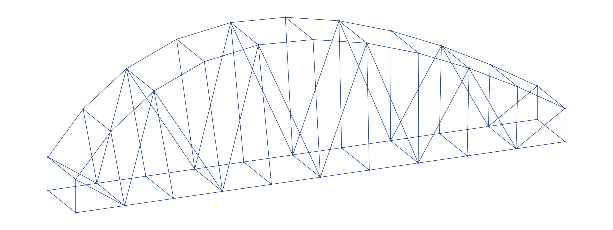

Positive axial force = tension. Negative axial force = compression. A member close to zero is drawn grey. The widths encode absolute force under one common scale across all five cases.
The geometry comes from a separate retained `2D Truss Karamba.3dm` state. The 30 m span, steel sections, supports and loading are later exploratory choices. They do not document the built bridge's physical test or a historical Karamba result.
Inspect a declared case
Swipe sideways across the drawing to see the full span; tap a member to read its force.
Choose a colored member
—
Click or focus a member in the diagram to inspect its saved axial result.

This clean linework comes from the same retained truss source used for the later force scenarios. The bridge screenshots and physical build are separate evidence.
Loading case and model conditions will appear after the data loads.
The full 104-member cases use a new inspectable first-order 3D frame solver. A separate native Karamba benchmark compared 17 members. Axial force is one component of a beam result: bending, local buckling, connections, stability, fatigue and physical capacity are not conveyed by these colors. Download the exact viewer dataset and source hashes.